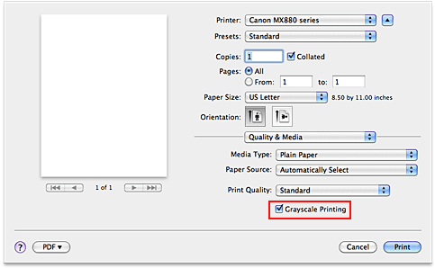

The procedure for printing a color document in monochrome is as follows:
-
Select Quality & Media from the pop-up menu on the Print Dialog
-
Set grayscale printing
Check the Grayscale Printing check box.
 -
Complete the setup
Click Print.
When you execute print, the document is converted to grayscale data. It allows you to print the color document in monochrome.
 Important
Important
-
When the Grayscale Printing check box is checked, the printer driver processes image data as sRGB data. In this case, actual colors printed may differ from those in the original image data.
When using the grayscale printing function to print Adobe RGB data, convert the data to sRGB data using an application software.
 Note
Note
-
During Grayscale Printing, color inks may be used as well as black ink.